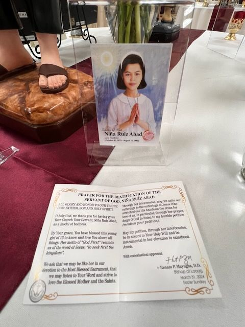

The label is in English
Servant of God Niña Ruiz Abad
On the label
Servant of God Niña Ruiz Abad Lay Faithful (October 31, 1979 - August 16, 1993)PRAYER FOR THE BEATIFICATION OF THE SERVANT OF GOD, NIÑA RUIZ ABAD … + Renato P. Mayugba, D.D. Bishop of Laoag March 31, 2024 Easter Sunday
In English
(Already in English.)
Saints named
A relic card of the Filipino girl (1979–1993) whose motto was God First, with a small round relic badge, and a prayer for her beatification approved by the Bishop of Laoag. The relic type is not named.